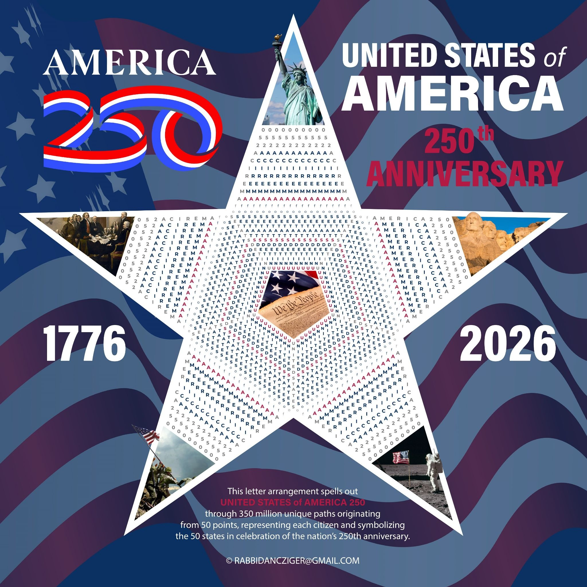
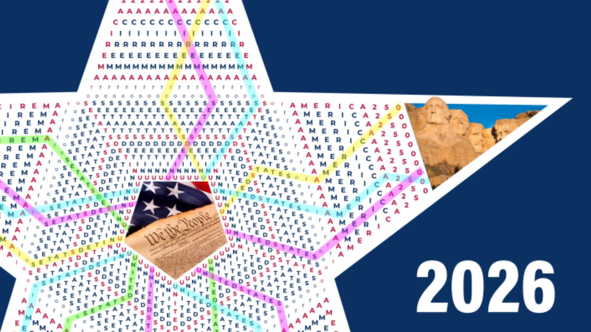
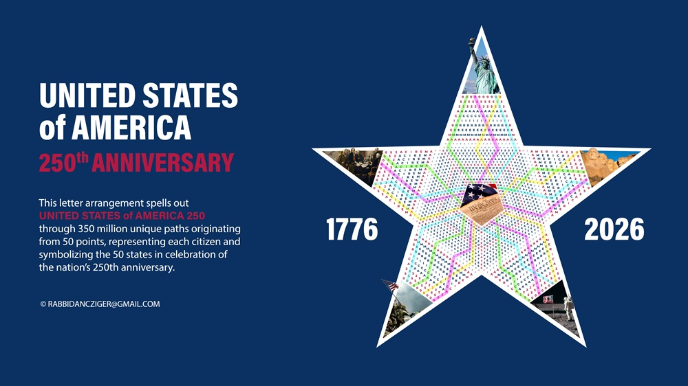
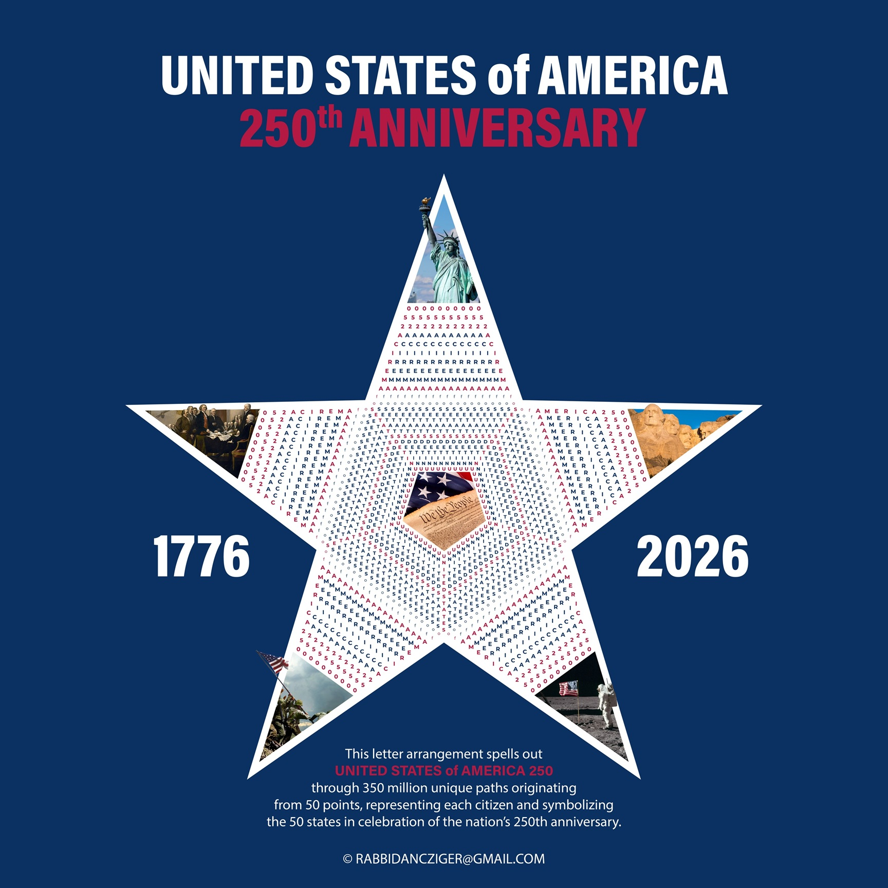
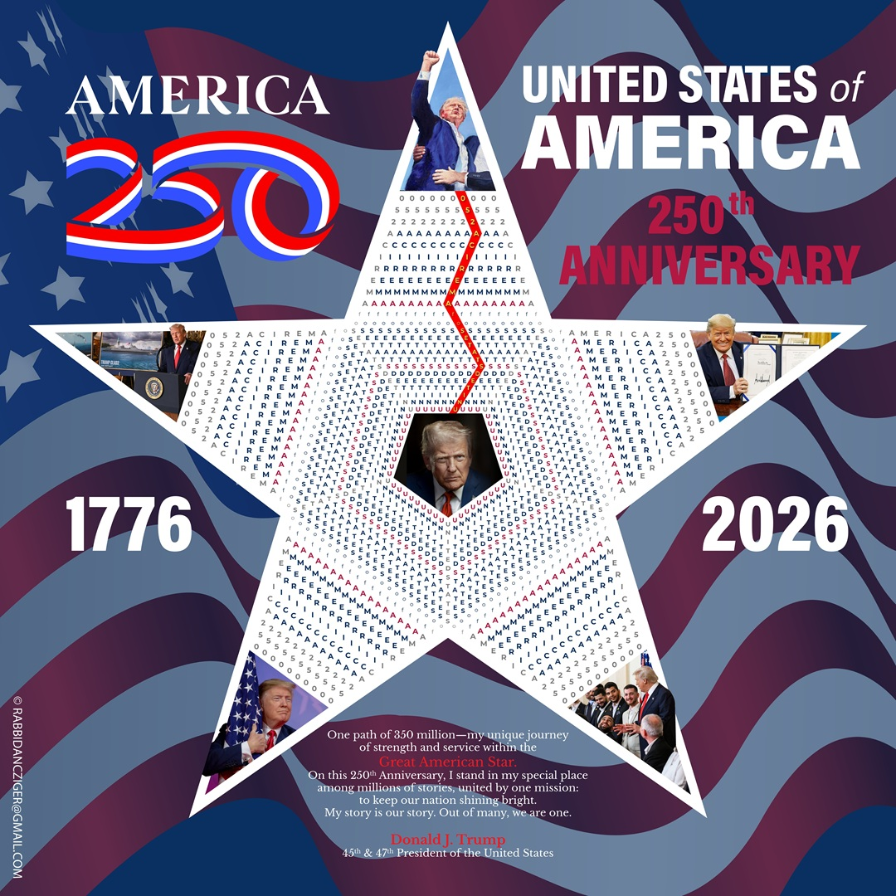

Interactive mathematical art for America's 250th anniversary
Features 359,277,250 unique paths through Pascal's Triangle arranged as a patriotic star. Each path represents a unique journey for every American citizen, celebrating unity through diversity in honor of our nation's semiquincentennial.
Watch as random paths are highlighted in real-time, showing how individual journeys flow through Pascal's Triangle from the central pentagon to the star's tips.
Explore the mathematical framework behind The Great American Star. Calculate path distributions and understand the combinatorial mathematics that creates 359+ million unique journeys.
Launch CalculatorExperience the mathematical beauty of Pascal's Triangle with interactive path tracing, color-coded letters, and real-time path animation. Perfect for educational exploration.
Explore TriangleWatch mesmerizing animations of paths flowing through the mathematical structure. See how individual journeys create the collective beauty of The Great American Star.
View Animation
Core star design with mathematical letter arrangement

Sample of highlighted paths showing unique journeys

Navy blue background with highlighted paths visualization

Traditional red, white, and blue patriotic theme

Personalized example showing customization capabilities
The Great American Star aligns perfectly with America250's official motto "350 by 250" - their goal to engage all 350 million Americans by our nation's 250th anniversary. Our project creates exactly that: 359,277,250 unique paths representing every American citizen.
This mathematical art piece transforms the phrase "UNITED STATES of AMERICA 250" into a five-pointed star using a modified Pascal's Triangle structure. Each of the 359+ million paths represents a unique journey through American identity, starting from 50 points (representing the 50 states) and flowing outward to create a unified symbol of national unity.
The project embodies the principle "E Pluribus Unum" (Out of Many, One) by showing how millions of individual paths combine to form a single, beautiful star - a perfect metaphor for American democracy and the diverse journeys that make up our national story.